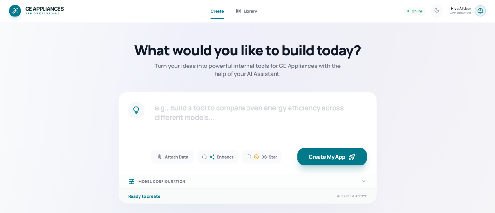
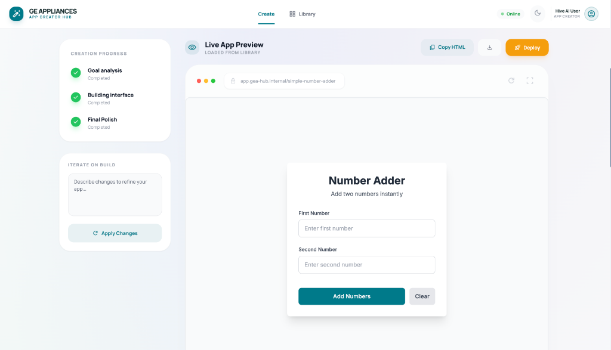

AI-Powered Internal Tool Builder
An Exploration of Agentic Workflows
The Goal
"Enable non-technical employees to build functional internal tools using natural language, without writing code."
What Does Success Look Like?
- User describes a tool in plain English
- System generates a working, deployable application
- No coding knowledge required
- Minutes instead of weeks
The Challenge
Why doesn't this already exist?
Traditional Development Barriers
- Technical expertise required — HTML, CSS, JavaScript
- Long development cycles — Days to weeks
- IT bottleneck — Every tool needs dev resources
Result: Simple tools don't get built, or take too long.
Why LLMs Alone Aren't Enough
- Generated code often looks correct but doesn't work
- No validation — hopes it runs, doesn't verify
- Can't self-correct when errors occur
- Hallucinations lead to subtle bugs
The Solution
Agentic Workflow
What is an Agentic Workflow?
Instead of one LLM call, use multiple specialized agents that:
- Break the problem into phases
- Critique each other's output
- Test automatically
- Iterate until correct
The DS-Star Pipeline

Multi-Agent Collaboration
| Agent | Role |
|---|---|
| 🧠 Planner | Translates intent → structured requirements |
| 💻 Coder | Generates complete HTML/CSS/JS |
| 🔍 Critic | Reviews security, completeness, quality |
| 🧪 Tester | Runs automated browser tests |
The Iteration Loop
┌─────────────────────────────────────────────────────┐
│ ITERATIVE REFINEMENT │
│ │
│ Prompt → Plan → Code → Critique → Test → Deploy │
│ ↑ │ │
│ └────── Fix & Retry ←────┘ │
│ │
└─────────────────────────────────────────────────────┘
Code is tested. If it fails, errors are fed back. System patches and retries.
The Prototype
Live Demo →Home: Describe What You Want
Watch It Build
Manage Deployed Tools

What Works Today
- ✅ Simple tools (calculators, forms, trackers)
- ✅ Self-correcting iteration loop
- ✅ Automated smoke testing
- ✅ Persistent storage for deployed apps
- ✅ Runtime AI helper for generated apps
What's Missing
Gaps in the current prototype
Current Limitations
- No database access — Only local storage
- Single-page only — No multi-file apps
- No auth integration — Can't connect to internal systems
- Limited testing — Smoke tests, not comprehensive
- No version control — No diff/rollback for iterations
Honest Assessment
| Capability | Status |
|---|---|
| Simple tools (forms, calculators) | ✅ Works well |
| Data visualization (charts) | ⚠️ Hit or miss |
| Complex multi-step workflows | ❌ Needs manual help |
| Production-ready apps | ⚠️ Requires human review |
What Needs to Be Added
To make this production-ready
Required Additions
- Authenticated data sources — Connect to internal APIs securely
- Comprehensive testing — Unit tests, not just smoke tests
- Multi-page support — Complex apps with routing
- Collaboration features — Share, comment, version control
- Approval workflow — IT review before deployment
Nice-to-Haves
- Template library for common tools
- Natural language refinement after deployment
- Analytics on generated apps
- Mobile-responsive previews
Problems With This Approach
The hard truths
Security Risks
- Prompt injection — Malicious inputs could generate harmful code
- Sandbox escape — Generated apps could bypass restrictions
- Data leakage — LLMs might expose training data
- Supply chain — CDN libraries could be compromised
Reliability Issues
- Non-determinism — Same prompt, different results
- Hallucinations — Confident but wrong code
- Regression — "Fixes" that break other things
- Infinite loops — Agent may never converge
Cost & Performance
- API costs scale with iterations — 8 iterations = 8x cost
- Latency — Multi-agent adds time per step
- Token limits — Complex apps may exceed context window
Making It Optimal
Path forward
Security Hardening
- Strict CSP policies and sandboxing
- Static analysis before execution
- Rate limiting and abuse detection
- Human-in-the-loop for production deployments
Improving Reliability
- Better prompts — More structured, less ambiguous
- Fine-tuned models — Trained on successful outputs
- Feedback loops — Learn from user corrections
- Escape hatches — Max iterations, human takeover
Reducing Costs
- Cache successful plans/components for reuse
- Use smaller models for simple tasks
- Early termination when confidence is high
- Template-based generation for common patterns
The Ideal State
| Aspect | Target |
|---|---|
| Success rate | >90% for simple tools |
| Time to deploy | <5 minutes |
| Security incidents | Zero (sandboxed) |
| User satisfaction | High enough to replace IT tickets |
Thank You
An exploration of what's possible with agentic AI workflows
Try the Prototype →